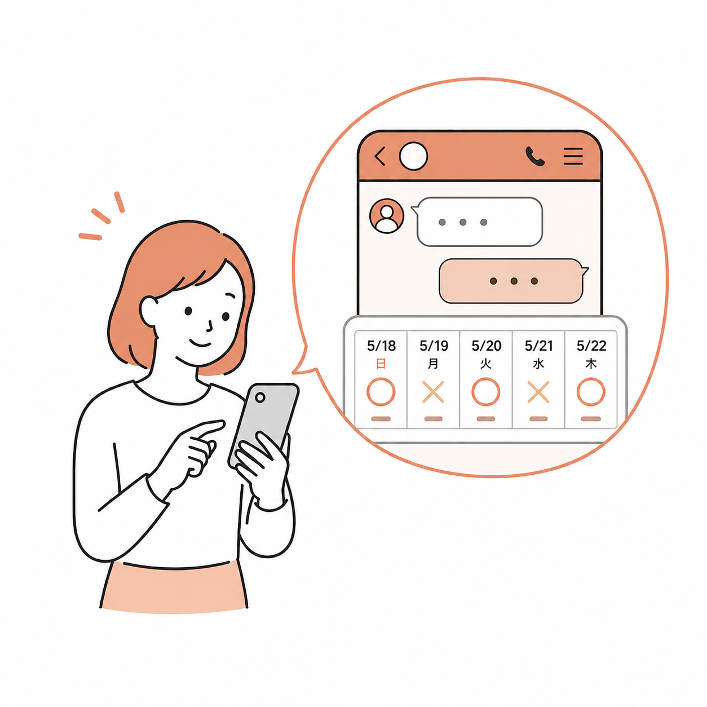
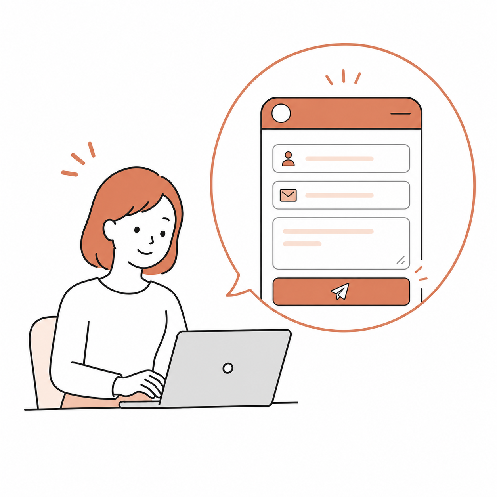
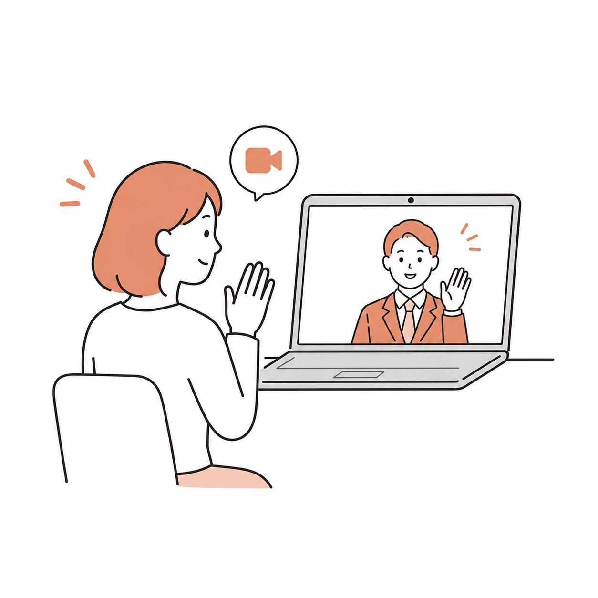
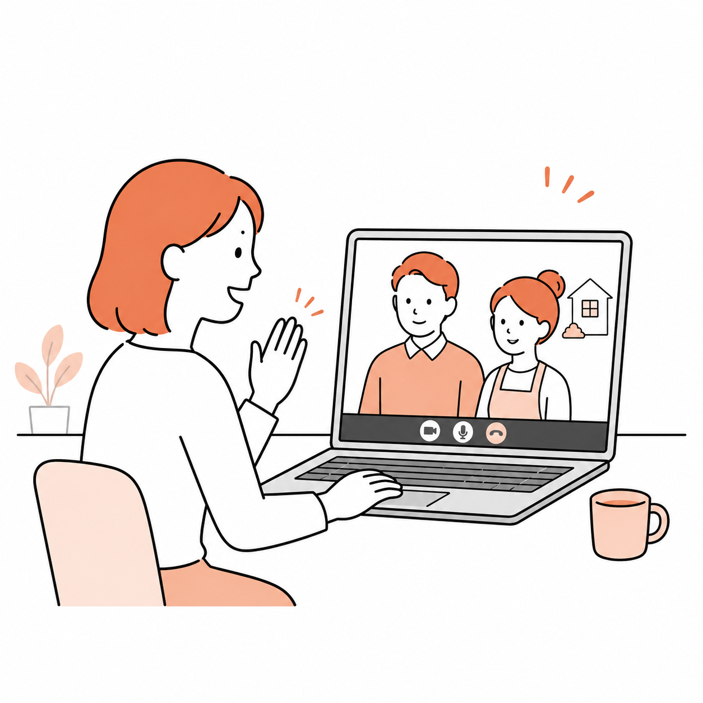
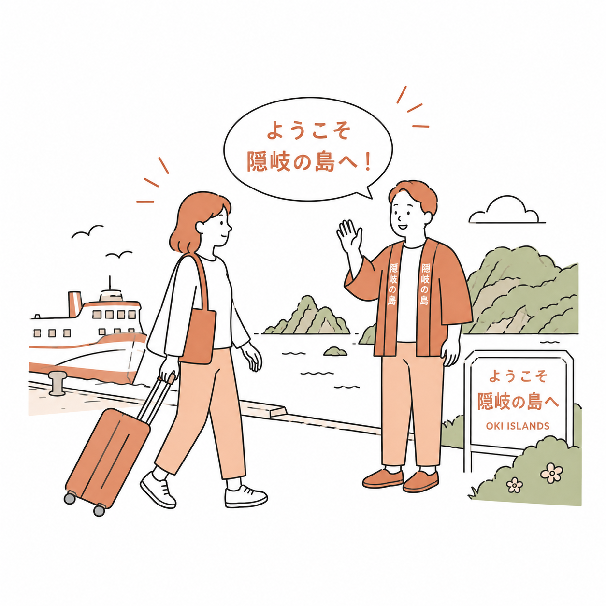

移住後の後悔を減らす
観光では分からない、仕事・買い物・移動の現実を先に確認できます。
おき暮らしごっことは？
いきなり移住ではなく、まずは「暮らしの練習」から。 島での日常にふれて、自分に合うかどうかを確かめるための入口です。
観光では分からない、仕事・買い物・移動の現実を先に確認できます。
滞在中の相談や交流を通して、自分に合う関わり方を確かめます。
滞在中に見つけたことをSNSに残し、自分の判断材料として整理できます。
隠岐の島について
隠岐の島町は、島根半島の北にある隠岐諸島の「島後」にあります。 港や役場がある西郷を中心に、海沿い、山あい、集落ごとに暮らしの表情が少しずつ違います。
隠岐の島町のイラスト
暮らしを試す
観光の予定を詰め込むより、ふだんの暮らしに近い時間を大切にします。 判断材料になる場面を、滞在中にひとつずつ確認していきます。
作業する、買い物に行く、近所を歩く。生活として続けられるかを確かめます。
海や山、地域のイベントへ。観光ではなく、暮らしの延長として出かけます。
地域の人と話しながら、島で暮らす空気や関わり方を感じていきます。
こんな方へ
受け入れ先
滞在先や地域との接点は、参加前の相談で調整します。まずは、受け入れ先の候補を見ながら滞在のイメージをふくらませてください。
条件を確認する
ここからは、申し込み前に確認しておきたい条件を整理しています。 詳細や最新の募集状況は、公式LINEで確認してください。LINEでは空き日程やお知らせを受け取りながら、自分のタイミングで相談を進められます。
滞在費補助
条件を満たした方に、滞在費として一律で補助します。
参加の流れ
参加できそうな時期、仕事環境、滞在条件をまずはLINEで確認します。お知らせもLINEで受け取れます。

名前、来訪予定時期、滞在中に試したいことをフォームで送ります。この時点では参加確定ではありません。

希望内容、日程、補助条件、滞在中の過ごし方を確認し、参加に進めるかをすり合わせます。

担当者が候補となる宿泊先を提案し、参加希望者と受け入れ先で直接話します。

参加者と受け入れ先の双方が同意した場合に正式決定し、13泊14日の移住体験に進みます。

Q&A
原則として13泊14日の滞在を想定しています。日程や移動の都合は、LINE相談や面談で確認してください。
滞在中の体験を、InstagramやXなどで3日に1回以上発信していただく想定です。指定ハッシュタグなどの詳細は参加前に共有します。
最新の募集状況、定員、日程調整の可否は公式LINEで確認してください。相談時点で参加が確定するものではありません。
対象経費の考え方は事前相談で確認します。領収書がない費用や、島内滞在との関係を確認できない費用は対象外となる場合があります。
いいえ。まずは条件や日程を確認するだけでも大丈夫です。参加できるか迷っている段階でご相談ください。